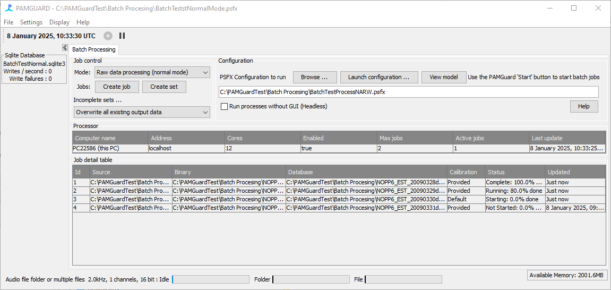
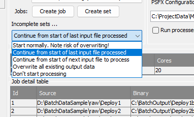

Modern computers have multiple processor cores, allowing them to perform several tasks simultaneously. For example, my desktop has 12 and my laptop 10. PAMGuard is designed so that each module will run semi-independently on a different core, but it's really only the detectors and some of the sound processing modules that use much power. So depending on the complexity of your PAMGuard configuration, it's unlikely that it will be using all of the power of all of the cores. Therefore you can usually run several instances of PAMGuard simultaneously, without any of them slowing down. However, if you add too many, then things will slow down overall, and you're system may run out of memory.
How many PAMGuard's can run concurrently depends on the complexity of your configuration and the power of your machine. Generally though, I find that I can run three or four PAMGuards at once before the system starts to become slow, or even unstable.
The default number of concurrent jobs in the batch processor module is 3. You can change this at any time by right clicking on the single line in the processor table.
You can increase or decrease the number of jobs at any time. If you increase it while the processes are running, then another process will launch after a few seconds. If you decrease it, not jobs will stop, but when the next one finished, another will not start until the total number running drops below the new selected maximum.
Once all your jobs are ready, press the PAMGuard start button. The set number of jobs will launch after a few seconds and start to run. When each job finishes, that instance of PAMGuard will close and the next job will launch until all jobs are complete.
Job progress is shown in the Jobs table on the display and is regularly written to the database.
To stop batch processing, press the PAMGuard 'stop' button on the Batch Processor PAMGuard. You will then probably have to also stop any other instances of PAMGuard that are still running.
If you start one of the running instances, then it's likely that the Batch control system will immediately start the next job in the list.
You may want to reprocess your data, for instance if you've made a change to the configuration, or you may have to restart, for example if there was an error or even a Windows restart over the weekend. There are several options as to how PAMGuard should behave when restarting, which can be selected from the "Incomplete Sets ..." menu in the Job Control panel.
This is not recommended since the database may end up with two copies of output data. Furthermore binary files, which are generally started on the hour sometimes get slightly different file names so some files (that had an identical name) will be overwritten, and others which got a slightly different name won't be.
This is a sensible option to select if processing stopped for some reason half way through a bit dataset. PAMGuard will go to the start of the input file and attempt to delete any existing data from the existing binary files and database which come after that time before starting from where it left off.
This is similar to the previous options, but might leave a gap in your data. It can be useful if there is one "problem file" that you're prepared to give up on.
Don't start if there are any existing data.
As it says, all existing data will be deleted for each job before processing starts. This is the most sensible option to select if you've changed your configuration and want to reprocess from scratch.
Previous: Creating Batch Jobs.